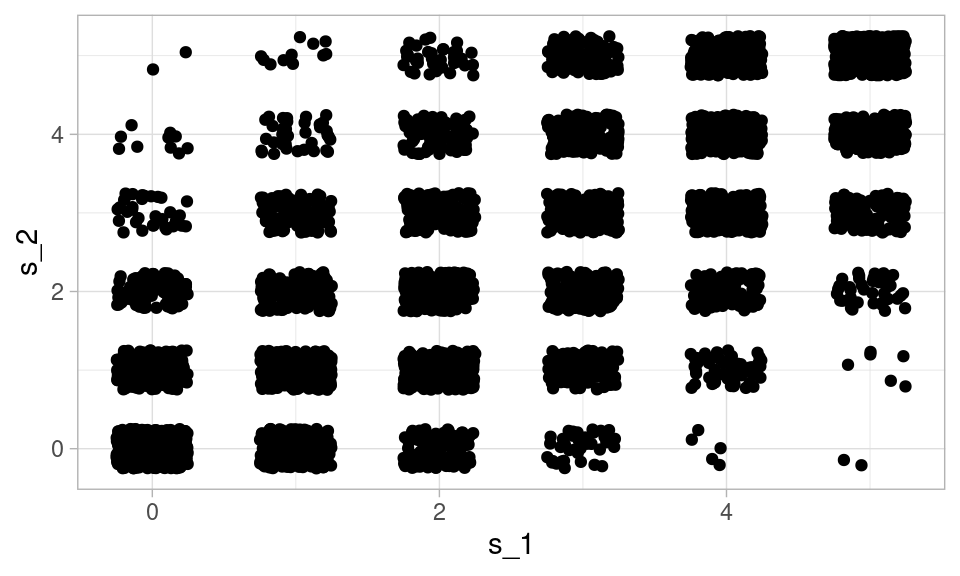
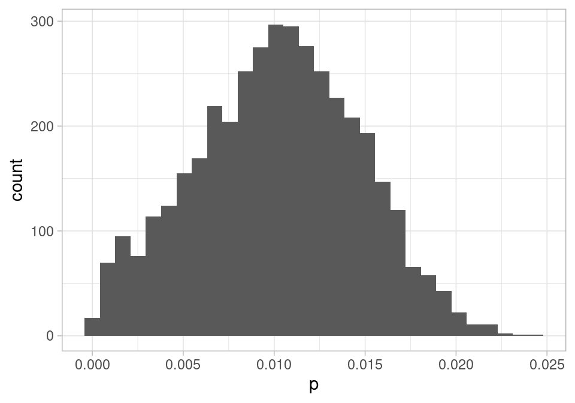

Código
library(tidyverse)
library(kableExtra)
library(DiagrammeR)
ggplot2::theme_set(ggplot2::theme_light())library(tidyverse)
library(kableExtra)
library(DiagrammeR)
ggplot2::theme_set(ggplot2::theme_light())En problemas que no son muy simples, para hacer inferencia usamos modelos probabilísticos. En esta parte veremos una manera de visualizar estos modelos que
Antes de hablar específicamente de problemas de inferencia causal, introduciremos notación y repasaremos algunos conceptos de probabilidad multivariada.
Si \(X\) es una variable aleatoria, abusaremos de la notación escribiendo \(p(x)\) para denotar su función de densidad (continua o discreta). Si \(X\) es discreta, \(p(x)=P(X=x)\), y si \(X\) es continua, entonces \(p(x)\) es la función de densidad, que utilizamos para calcular probabilidades usando integrales, por ejemplo
\[P(X \in [a,b]) = \int_a^b p(x)\, dx\] Ojo: en algunos casos, para evitar reescribir fórmulas, usaremos esta misma notación para denotar probabilidades de variables discretas, que más apropiadamente escribiríamos como \(P(X\in[a,b]) = \sum_{x=a}^{b} P(X = x)\).
Si \(X\) y \(Y\) son variables aleatorias, entonces denotamos por \(p(x,y)\) a su densidad conjunta. Podemos calcular las distribuciones de x y y integrando sobre una de las variables
\[p(y) = \int_{-\infty}^{\infty} p(x,y)dx = \int p(x,y)dx\] Nótese que abusamos algo de la notación quitando los límites de la integral de la derecha (y recordamos que si \(X\) es discreta, entonces usamos una suma en lugar de una integral). En este contexto, \(p(x), p(y)\) se llaman distribuciones marginales de \(X\) y \(Y\)
Denotamos por \(p(y|x)\) y \(p(x|y)\) a las densidades condicionales de Y dado X y X dada Y respectivamente. Estas están definidas por
\[p(y|x) = \frac{p(x, y)}{p(x)}\] Esta densidad condicional nos dice cómo se distribuye \(Y\) cuando sabemos que \(X=x\).
De esta definición, tenemos la regla del producto que establece que
\[p(x,y) = p(y|x) p(x) = p(x|y)p(y) \]
Cuando la distribución condicional de \(p(y|x)\) cambia dependiendo de la \(x\), decimos que \(X\) y \(Y\) está asociadas. Si no es el caso, decimos que son independientes. Esto quiere decir que
\[p(y|x) = p(y)\] es decir, la condicional de \(Y\) dada \(X\) es igual a la marginal de \(Y\). Por definición, la independencia también se puede escribir como una versión simplificada de la regla del producto:
\[p(x,y) = p(x)p(y)\] es decir, la conjunta se factoriza en una parte que sólo depende de \(x\) y otra que sólo dependen de \(y\).
Una manera útil de construir modelos de probabilidad conjuntas con variables que tienen dependencias es utilizando una factorización de la regla del producto, lo cual nos permite concentrarnos en una variable a la vez.
Dependiendo del tipo de problema, puede ser más conveniente definir \(p(x)\) y \(p(y|x)\) o \(p(y)\) y \(p(x|y)\). En ambos casos podemos calcular la conjunta \(p(x,y)\) con la que podemos calcular cualquier probabilidad conjunta de interés o cantidad resumen que involucra a a estas dos variables aleatorias.
Supongamos que \(X\) es el resultado de una tirada de dado, y que \(Y\) es el número de soles que obtenemos en \(X\) volados de una moneda justa.
Entonces podemos escribir \(p(x) = 1/6\) para \(x=1,2,\ldots, 6\), es decir, \(X\) es Uniforme en \(\{1,2,3,4,5,6\}\), y \(Y|X=x\) son el número de soles en \(x\) volados, de modo que es Binomial con parámetros \((x, 0.5)\). Esto lo podemos escribir como
\[\begin{equation} \begin{split} Y|X \sim & Bin(X, 0.5) \\ X = & U(\{1,2,3,4,5,6\}) \end{split} \end{equation}\]
Estas variables no son independientes, pues la condicional de \(Y\) cambia dependiendo del valor que toma \(X\).
Como estas dos variables son discretas, la conjunta puede escribirse con la regla del producto como una tabla como sigue:
probs_x <- tibble(x = 1:6, p_x = 1/6)
probs_conjunta <- crossing(probs_x, y = seq(0, 6, 1)) |>
mutate(p_cond_y = dbinom(y, size = x, prob = 0.5)) |>
mutate(p = p_cond_y * p_x) #producto
probs_conjunta |> select(x, y, p) |>
pivot_wider(names_from = x, values_from = p, names_prefix = "x=") |>
kable(digits = 4) |> kable_paper()| y | x=1 | x=2 | x=3 | x=4 | x=5 | x=6 |
|---|---|---|---|---|---|---|
| 0 | 0.0833 | 0.0417 | 0.0208 | 0.0104 | 0.0052 | 0.0026 |
| 1 | 0.0833 | 0.0833 | 0.0625 | 0.0417 | 0.0260 | 0.0156 |
| 2 | 0.0000 | 0.0417 | 0.0625 | 0.0625 | 0.0521 | 0.0391 |
| 3 | 0.0000 | 0.0000 | 0.0208 | 0.0417 | 0.0521 | 0.0521 |
| 4 | 0.0000 | 0.0000 | 0.0000 | 0.0104 | 0.0260 | 0.0391 |
| 5 | 0.0000 | 0.0000 | 0.0000 | 0.0000 | 0.0052 | 0.0156 |
| 6 | 0.0000 | 0.0000 | 0.0000 | 0.0000 | 0.0000 | 0.0026 |
Nótese adicionalmente que la forma en que planteamos el problema naturalmente nos da un modelo generativo, es decir, podemos simular fácilmente realizaciones de esta conjunta particular:
simular_juego <- function(n = 1, x = NULL){
if(is.null(x)){
x <- sample(1:6, n, replace = TRUE)
}
y <- rbinom(n, x, prob = 0.5)
tibble(n = seq_len(n), x = x, y = y)
}
set.seed(880)
simular_juego(n = 5)# A tibble: 5 × 3
n x y
<int> <int> <int>
1 1 5 3
2 2 5 1
3 3 3 1
4 4 6 4
5 5 4 3Y usando simulación podemos estimar cualquier cantidad de interés acerca de las variables \(X\) y \(Y\). Por ejemplo, su correlación la estimamos con
simular_juego(n = 10000) |> select(x, y) |> cor() x y
x 1.0000000 0.6716973
y 0.6716973 1.0000000Supongamos que \(W\) es una el peso de una persona y \(H\) su estatura. Podemos comenzar con la factorización \(p(w,h) = p(h)p(w|h)\). Un modelo generativo podría ser el que sigue: \(H\) es Normal con media 165 y desviación estandar 12,
\[H \sim N(170, 12) \]
y dada la estatura \(H=h\), el peso es
\[W|H=h \sim N(m_h, 10)\] donde
\[m_h = -50 + 0.7 h\]
sim_wh <- function(n = 10){
h <- rnorm(n, 170, 12)
m_h <- -50 + 0.7 * h
w <- rnorm(n, m_h, 10)
tibble(w = w, h = h)
}set.seed(992)
sims <- sim_wh(500)
ggplot(sims, aes(x = h, y = w)) + geom_point()
Supongamos que tenemos \(X_1,\ldots, X_p\) variables aleatorias. Denotamos su conjunta con \[p(x_1, x_2, \ldots, x_n)\] En el caso particular de 3 variables p(x,y,z) la regla del producto se escribe como
\[p(x,y,z) = p(z|x,y)p(y|z)p(x)\] que podemos escribir, dependiendo del problema, en cualquiera de las seis permutaciones posibles, por ejemplo:
\[p(x,y,z) = p(x|y,z)p(y|z)p(z)\]
El proceso de simulación lo podemos mostrar gráficamente como sigue:
grViz("
digraph {
graph [ranksep = 0.2]
node [shape=plaintext]
X
Y
Z
edge [minlen = 3]
Z -> Y
Y -> X
Z -> X
{ rank = same; Z; Y }
}
", width = 200, height = 50)Nótese que este ejemplo puede aplicarse a cualquier conjunta nos interese, pues la factorización resulta de la regla del producto.
Supongamos que escogemos al azar un número \(X\) entre 0 y 1, y luego tiramos dos veces cinco volados con probabilidad de sol \(X\). Medimos el número de soles en cada prueba como \(S_1\) y \(S_2\).
En este caso, es natural escribir la factorización:
\[p(x,s_1,x_2) = p(s_2|s_1,x)p(s_1|x)p(x).\] Sin embargo, podemos simplificar aún más esta conjunta, pues en realidad una vez que sabemos X, el resultado de \(S_1\) no cambia la distribución de \(S_2\), de forma que para el proceso que describimos arriba,
\[p(x, s_1, s_2) = p(s_2|x)p(s_1|x)p(x).\] En este caso, en nuestros supuestos está la independencia condicional de \(S_1\) y \(S_2\) dado \(X\), que explicaremos con detalle más adelante. El diagrama relevante es
grViz("
digraph {
graph [ranksep = 0.2]
node [shape=plaintext]
X
S1 [label = <S<SUB>1</SUB>>]
S2 [label = <S<SUB>2</SUB>>]
edge [minlen = 3]
X -> S1
X -> S2
{ rank = same; S1; S2 }
}
", width = 200, height = 50)Y podemos hacer simulaciones de este proceso generador:
simular_dos <- function(n = 10, x = NULL){
if(is.null(x)){
x <- runif(n)
}
s_1 <- rbinom(n, 5, prob = x)
s_2 <- rbinom(n, 5, prob = x)
tibble(x = x, s_1 = s_1, s_2 = s_2)
}
set.seed(116)
sims_monedas <- simular_dos(5000)
head(sims_monedas)# A tibble: 6 × 3
x s_1 s_2
<dbl> <int> <int>
1 0.741 4 4
2 0.336 5 2
3 0.193 1 1
4 0.281 1 2
5 0.998 5 5
6 0.534 3 5Nótese que aún cuando simulamos independientemente \(S_1\) y \(S_2\) una vez que tenemos el dado, \(S_1\) y \(S_2\) no son independientes:
ggplot(sims_monedas, aes(x = s_1, y = s_2)) + geom_jitter(width = 0.25, height = 0.25)
Nótese que en muchos casos, la estructura que genera los datos puede incluir variables que no hemos medido. No es una buena idea quitar estas variables porque simplemente nos las conocemos. Dado el proceso generador, no tendría mucho sentido escribir \(S_1 \to S_2\) o \(S_2 \to S_1\) (aunque podríamos construir tales modelos).
En este caso, podríamos mejor escribir:
grViz("
digraph {
graph [ranksep = 0.2]
node [shape=circle]
X
node [shape=plaintext]
S1 [label = <S<SUB>1</SUB>>]
S2 [label = <S<SUB>2</SUB>>]
edge [minlen = 3]
X -> S1
X -> S2
{ rank = same; S1; S2 }
}
", width = 200, height = 50)La estructura del modelo junto con la naturaleza de las relaciones que conocemos nos permite hacer inferencia sobre esas variables no observadas:
mod_monedas <- cmdstanr::cmdstan_model("../src/monedas.stan")
print(mod_monedas)data {
int<lower=0> s_1;
int<lower=0> s_2;
}
parameters {
real<lower=0, upper = 1> x;
}
model {
x ~ uniform(0, 1);
s_1 ~ binomial(5, x);
s_2 ~ binomial(5, x);
}datos_lista <- list(s_1 = 5, s_2 = 3)
ajuste <- mod_monedas$sample(data = datos_lista, refresh = 1000)Running MCMC with 4 sequential chains...
Chain 1 Iteration: 1 / 2000 [ 0%] (Warmup)
Chain 1 Iteration: 1000 / 2000 [ 50%] (Warmup)
Chain 1 Iteration: 1001 / 2000 [ 50%] (Sampling)
Chain 1 Iteration: 2000 / 2000 [100%] (Sampling)
Chain 1 finished in 0.0 seconds.
Chain 2 Iteration: 1 / 2000 [ 0%] (Warmup)
Chain 2 Iteration: 1000 / 2000 [ 50%] (Warmup)
Chain 2 Iteration: 1001 / 2000 [ 50%] (Sampling)
Chain 2 Iteration: 2000 / 2000 [100%] (Sampling)
Chain 2 finished in 0.0 seconds.
Chain 3 Iteration: 1 / 2000 [ 0%] (Warmup)
Chain 3 Iteration: 1000 / 2000 [ 50%] (Warmup)
Chain 3 Iteration: 1001 / 2000 [ 50%] (Sampling)
Chain 3 Iteration: 2000 / 2000 [100%] (Sampling)
Chain 3 finished in 0.0 seconds.
Chain 4 Iteration: 1 / 2000 [ 0%] (Warmup)
Chain 4 Iteration: 1000 / 2000 [ 50%] (Warmup)
Chain 4 Iteration: 1001 / 2000 [ 50%] (Sampling)
Chain 4 Iteration: 2000 / 2000 [100%] (Sampling)
Chain 4 finished in 0.0 seconds.
All 4 chains finished successfully.
Mean chain execution time: 0.0 seconds.
Total execution time: 0.6 seconds.sims <- ajuste$draws(c("x"), format = "df")
resumen <- ajuste$summary(c("x"))
resumen |> select(variable, mean, q5, q95)# A tibble: 1 × 4
variable mean q5 q95
<chr> <dbl> <dbl> <dbl>
1 x 0.749 0.516 0.921De modo que con alta probabilidad, escogimos una \(X\) entre .5 y 0.93.
En 2020 se hizo un estudio de seroprevalencia de COVID en Santa Clara, California.
Se tomó una muestra de individuos (ver los detalles en el artículo original). Para propósitos de este análisis supondremos que la muestra puede considerarse como aleatoria simple.
Se obtuvieron 3,300 individuos, y 50 de ellos resultaron con prueba positiva (1.5%). Sin embargo, el kit de prueba que estaban utilizando, tienen cierta especificidad y sensibilidad menores a 1. En pruebas de gold standard, el kit identificó correctamente como positivos a 103 de 122 personas infectadas, e identificó correctamente como negativos a 399 de 401 personas no infectadas.
Constuiremos ahora una gráfica que indica cómo es el proceso generador de datos
grViz("
digraph {
graph [ranksep = 0.2]
node [shape=circle]
sens
esp
prev
Inf
node [shape=plaintext]
Inf
Positivos
npos
poskit
nneg
negkit
N
edge [minlen = 3]
npos -> poskit
sens -> poskit
nneg -> negkit
esp -> negkit
prev -> Inf
Inf -> Positivos
sens -> Positivos
esp -> Positivos
N -> Inf
}
", width = 150, height = 60)library(cmdstanr)This is cmdstanr version 0.5.3- CmdStanR documentation and vignettes: mc-stan.org/cmdstanr- CmdStan path: /home/runner/.cmdstan/cmdstan-2.31.0- CmdStan version: 2.31.0mod_sc <- cmdstan_model("../src/sclara.stan")
print(mod_sc)data {
int<lower=0> N;
int<lower=0> n;
int<lower=0> kit_pos;
int<lower=0> n_kit_pos;
int<lower=0> kit_neg;
int<lower=0> n_kit_neg;
}
parameters {
real<lower=0, upper=1> p; //seroprevalencia
real<lower=0, upper=1> sens; //sensibilidad
real<lower=0, upper=1> esp; //especificidad
}
transformed parameters {
real<lower=0, upper=1> prob_pos;
prob_pos = p * sens + (1 - p) * (1 - esp);
}
model {
// verosimilitud
n ~ binomial(N, prob_pos);
// info de kit
kit_pos ~ binomial(n_kit_pos, sens);
kit_neg ~ binomial(n_kit_neg, esp);
// iniciales,
p ~ beta(1.0, 10.0);
sens ~ beta(2.0, 1.0);
esp ~ beta(2.0, 1.0);
}n <- 50
N <- 3300
datos_lista <- list(N = 3300, n = 50,
kit_pos = 103, n_kit_pos = 122,
kit_neg = 399, n_kit_neg = 401)
ajuste <- mod_sc$sample(data = datos_lista, refresh = 1000)Running MCMC with 4 sequential chains...
Chain 1 Iteration: 1 / 2000 [ 0%] (Warmup)
Chain 1 Iteration: 1000 / 2000 [ 50%] (Warmup)
Chain 1 Iteration: 1001 / 2000 [ 50%] (Sampling)
Chain 1 Iteration: 2000 / 2000 [100%] (Sampling)
Chain 1 finished in 0.1 seconds.
Chain 2 Iteration: 1 / 2000 [ 0%] (Warmup)
Chain 2 Iteration: 1000 / 2000 [ 50%] (Warmup)
Chain 2 Iteration: 1001 / 2000 [ 50%] (Sampling)
Chain 2 Iteration: 2000 / 2000 [100%] (Sampling)
Chain 2 finished in 0.0 seconds.
Chain 3 Iteration: 1 / 2000 [ 0%] (Warmup)
Chain 3 Iteration: 1000 / 2000 [ 50%] (Warmup)
Chain 3 Iteration: 1001 / 2000 [ 50%] (Sampling)
Chain 3 Iteration: 2000 / 2000 [100%] (Sampling)
Chain 3 finished in 0.0 seconds.
Chain 4 Iteration: 1 / 2000 [ 0%] (Warmup)
Chain 4 Iteration: 1000 / 2000 [ 50%] (Warmup)
Chain 4 Iteration: 1001 / 2000 [ 50%] (Sampling)
Chain 4 Iteration: 2000 / 2000 [100%] (Sampling)
Chain 4 finished in 0.0 seconds.
All 4 chains finished successfully.
Mean chain execution time: 0.0 seconds.
Total execution time: 0.5 seconds.sims <- ajuste$draws(c("p", "sens", "esp"), format = "df")
resumen <- ajuste$summary(c("p"))resumen |> select(variable, mean, q5, q95)# A tibble: 1 × 4
variable mean q5 q95
<chr> <dbl> <dbl> <dbl>
1 p 0.0102 0.00238 0.0173Y podemos graficar la posterior de la seroprevalencia:
ggplot(sims, aes(x = p)) +
geom_histogram()`stat_bin()` using `bins = 30`. Pick better value with `binwidth`.
Y vemos que los datos son consistentes con el dato reportado por los autores (alrededor de 1.2%), pero que no podemos excluir valores de prevalencia muy bajos (por abajo de 0.3% por ejemplo). Por otro lado, también son consistentes valores muy altos de seroprevalencia, de manera que este estudio resultó ser poco informativo de la IFR del COVID.
Podemos hacer diagnósticos adicionales acerca de la razón de esta variabilidad alta, si graficamos la relación entre especificidad de la prueba y estimación de prevalencia:
ggplot(sims, aes(x = esp, y = p)) + geom_point() +
xlab("Especificidad del kit") + ylab("Prevalencia")
La asociación entre estas dos cantidades es interesante porque ninguna depende directamente de la otra (o lo largo de una cadena): su asociación aparece porque son causas que compiten para explicar una observación.
La factorización de la conjunta se puede escribir como:
\[\begin{align} p() = & p(Pos, Inf, npos, poskit, sens, nneg, negkit, esp, prev) = \\ & p(Pos|N,prev,esp,sens) \\ & p(Inf|p) \\ & p(nposkit|npos,sens)p(sens) \\ & p(negkit|nneg,esp)p(esp) \\ & p(N)p(nneg)p(npos) \end{align}\]
Podemos ignorar la última línea si consideramos que estas cantidades fueron fijadas sin relación a las variables de interés (de modo que el análisis es condicional a estas variables).
Sean \(X,Y,Z\) variables aleatorias. Decimos que \(X\) y \(Y\) son condicionalmente independientes cuando satisfacen \[p(x,y|z) = p(x|z)p(y|z)\] o equivalentemente, \[p(x|y,z) = p(x|z)\]
En palabras: si conocemos el valor de \(Z\), \(X\) y \(Y\) ya no están asociadas, o si ya condicionamos a z, entonces condicionar adicionalmente a \(Y\) no cambia la distribución condicional de \(X\). Para ver por qué las dos formas son equivalentes recuerda que cualquier regla de probabilidad general puede condicionarse a cualquier infromación y sigue siendo una regla válida. Como de mostramos que \(p(x,y) = p(x)p(y)\) si y sólo si \(p(y|x) = p(y)\), podemos obtener una regla válida condicionando todo a \(Z\).
En nuestro primer ejemplo de la sección anterior, observamos que una vez que sabíamos \(X\), la probabilidad de sol, no hay relación entre \(X\) y \(Y\), aún cuando no es cierto que \(p(x,y) = p(x)p(y)\).
Podemos checar esto en las simulaciones, por ejemplo:
set.seed(812)
simular_dos(1e5, x = 0.4) |>
select(s_1, s_2) |>
group_by(s_1, s_2) |>
count() |>
group_by(s_1) |>
mutate(prop_cond = n / sum(n)) |>
ggplot(aes(x = s_2, y = prop_cond, colour = s_1, group = factor(s_1))) +
geom_line()
Las condicionales son iguales, de modo que son independientes dado \(x = 0.4\).
Para representar la construcción de modelos que hemos considerado de manera gráfica, podemos usar las siguiente idea:
Decimos que una gráfica dirigida \(G\) representa a una conjunta \(p(x_1,\ldots, x_p)\) cuando podemos factorizar
\[p(x_1,\ldots, x_p) = \prod_{i=1}^p p(x_i | pa(x_i))\]
donde \(pa(x_i)\) son los padres del nodo X_i en la gráfica G.
Consideramos la siguiente gráfica:
grViz("
digraph {
graph [ranksep = 0.2]
node [shape=plaintext]
Ob
Fuma
EC
Tos
edge [minlen = 3]
Ob -> EC
Fuma -> EC
Fuma -> Tos
}
", width = 200, height = 50)Esta gráfica representa una conjunta \(p(o,f,c,t)\) cuando es posible factorizar
\[p(o,f,c,t) = p(f)p(o)p(c|o,f)p(t|f),\]
de forma que podemos entender el proceso generador de este conjunto de variables como sigue: simulamos primero \(F\) y \(C\), usando el valor de \(F\) podemos simular \(T\), y usando el valor de \(F\) y \(C\) podemos simular \(C\). En este ejemplo podemos pensar que las variables son Obesidad, Fumador, Enfermedad de Corazón y Tos. Nótese que la distribución de Enfermedad de Corazón depende del estado de Obesidad y fumador. La probabilidad de tener tos depende directamente del estado de fumador.
El conjunto de independencias condicionales de una conjunta \(p\) está fuertemente ligado a la estructura de la gráfica que la representa:
Una distribución \(p\) es representada por \(G\) si y sólo si para cada variable \(W\), cuando condicionamos a los padres \(pa(W)\) de \(W\), \(W\) es condicionalmente independiente de todas las variables que nos descendientes o padres de \(W\).
Es decir, si condicionamos a los padres de una variable, esta variable es condicionalmente independiente de “el pasado”. Estas no son las únicas independencias condicionales que están presentes, veremos que para calcular éstas es necesario usar el concepto de d-separación. Antes discutiremos las estructuras básicas que nos interesan en una gráfica.
Veremos que para razonar acerca de las asociaciones e independencias que pueden aparecer en una conjunta, podemos examinar la gráfica que la represente, o dicho de otra manera, entender bajo qué condiciones puede propagarse información de un nodo a otro.
Consideremos entonces tres variables \(X\), \(Y\) y \(Z\). Las tres estructuras que tenemos que entender en primer lugar son:
En este caso tenemos:
grViz("
digraph {
graph [ranksep = 0.2, rankdir=LR]
node [shape=plaintext]
X
Y
Z
edge [minlen = 3]
X -> Z
Z -> Y
}
", width = 150, height = 20)En este caso,
Podemos pensar en \(Z\) como un mediador del efecto de \(X\) sobre \(Y\). Si no permitimos que \(Z\) varíe, entonces la información de \(X\) no fluye a \(Y\).
Por ejemplo, si \(X\) tomar o no una medicina para el dolor de cabeza, \(Z\) es dolor de cabeza y \(Y\) es bienestar general, \(X\) y \(Y\) están relacionadas. Sin embargo, si condicionamos a un valor fijo de dolor de cabeza, no hay relación entre tomar la medicina y bienestar general.
grViz("
digraph {
graph [ranksep = 0.2]
node [shape=plaintext]
X
Y
Z
edge [minlen = 3]
Z -> X
Z -> Y
}
", width = 200, height = 50)En este caso,
En este caso, variación en \(Z\) produce variación conjunta de \(X\) y \(Y\).
Este tipo de estructura también se llama bifurcación, o decimos que \(Z\) es una variable de confusión.
Por ejemplo, podríamos encontrar que el uso de aspirina \(X\) está asociado a una mortalidad más alta \(Y\). Una causa común es enfermedad grave que produce dolor (\(Z\)). Sin embargo, si condicionamos a personas sanas, veríamos que no hay relación entre uso de aspirina y mortalidad, igualmente veríamos que entre las personas enfermas el uso de aspirina no les ayuda a vivir más tiempo.
En este caso, a \(Z\) también le llamamos un colisionador:
grViz("
digraph {
graph [ranksep = 0.2]
node [shape=plaintext]
X
Y
Z
edge [minlen = 3]
X -> Z
Y -> Z
}
", width = 200, height = 50)En este caso, si observamos un valor particular de \(Z\), entonces existen menos posibles configuraciones probables de \(X\) y \(Y\), y esto generalmente produce dependencia.
Por ejemplo, si observamos que el pasto está mojado, entonces saber que no llovió implica que probablemente se encendieron los aspersores.
Podríamos considerar las variables apariencia física \(X\) y capacidad intelectual \(Y\). En principio, estas dos variables podrían ser independientes en la población general. Sin embargo, si consideramos solamente aquellas personas famosas, encontraríamos una correlación negativa entre apariencia y capacidad.